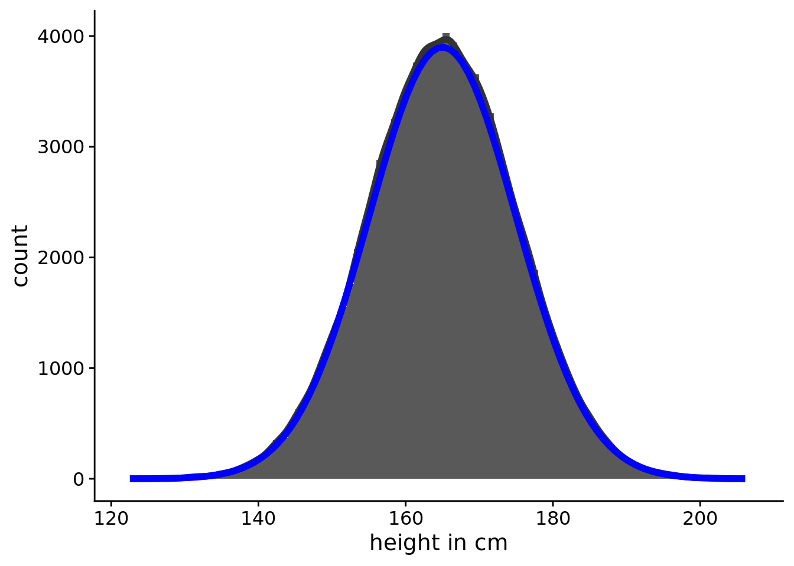
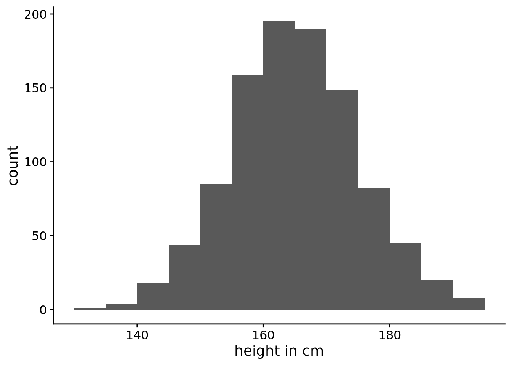
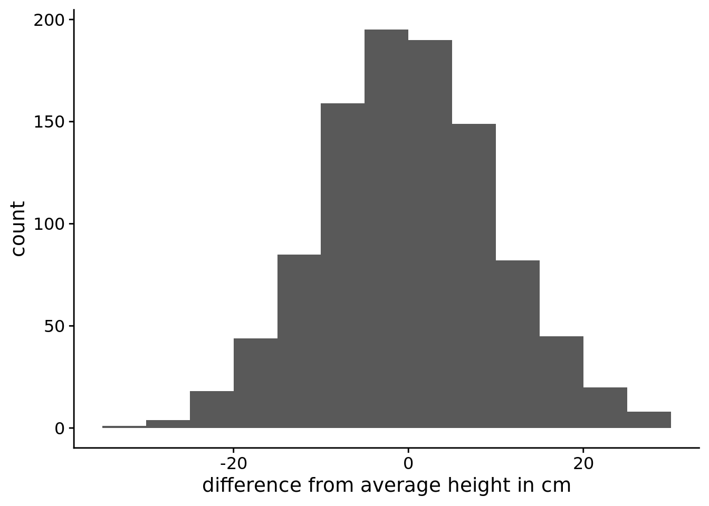
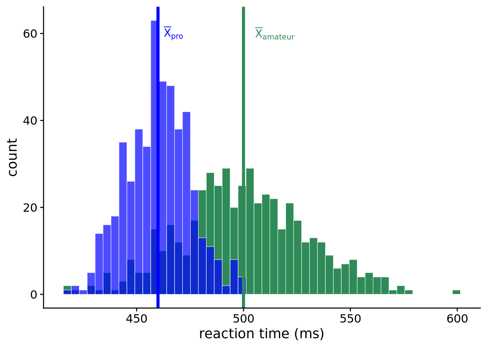
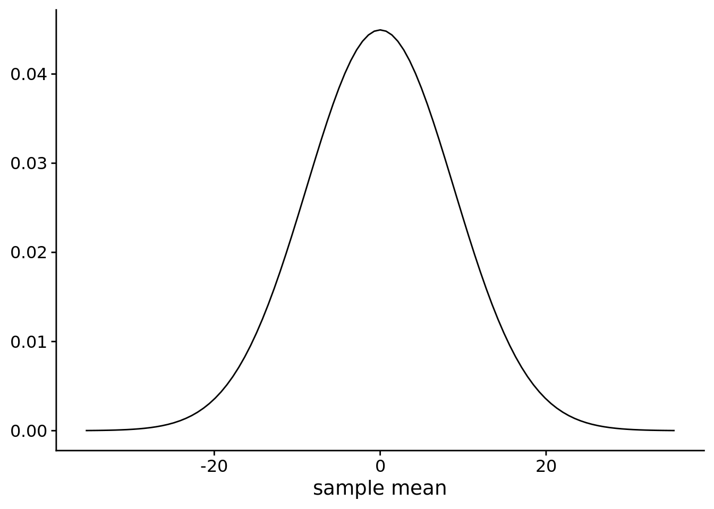

Lecture 9: Transformation and comparisons
Introduction to standardisation and z scores
In last week’s lecture we started learning a little bit about distributions. We learned about the normal distribution, and where it comes from. And we also learned a little bit about the sampling distribution, and why knowing the sampling distribution might be useful.
This week we’ll talk a little bit more about distributions and why the normal distribution is particularly useful.
The shape of things
If we were to measure the height of 1000 women and plot the values then we might get something like the plot in Figure 1. As you can see, the vast majority of the measured heights are in the 155–175 centimetre range. Only a small number of people fall outside of this range. You can also see that the distribution is roughly symmetrical around its mean (165 cm) and it has a shape characteristic of a normal distribution.
Of course it doesn’t look exactly like a normal distribution, because, as we saw in Lecture 8, a normal distribution is smooth line. Our plot is a histogram where we’ve just counted up the number of people that fall into each 5 centimetre bin. However, we could image measuring the heights of more and more people and making the bins narrower and narrower. In Figure 2 we can see what the histogram might look like if we were to measure 100,000 women.
Warning: Using `size` aesthetic for lines was deprecated in ggplot2 3.4.0.
ℹ Please use `linewidth` instead.Warning: The dot-dot notation (`..count..`) was deprecated in ggplot2 3.4.0.
ℹ Please use `after_stat(count)` instead.
In Figure 2 you can also see the what the corresponding normal distribution looks like. This idealised representation is a normal distribution with a mean of 165 and a standard deviation of 10. Although the normal distribution is an idealisation, or an abstraction, we can use it to do some very useful things.
The standard normal distribution
When we were first introduced to the normal distribution last week we saw that there were two parameters that we could change (\(\mu\) and \(\sigma\)) that changed where the normal distribution was centered and how spread out it was. When \(\mu=0\) and \(\sigma=1\), then the normal distribution is called the standard normal distribution. You can explore the normal distribution again in Explorable 1.
I said in Lecture 8 that when you adjust the \(\mu\) and \(\sigma\) values then the absolute positions of points on the plot change, but the relative position doesn’t change.
To understand what I mean by this, we’ll use an example. Let’s take the heights of people that we plotted in Figure 1. In this example we measures height in centimeters. It should be pretty obvious that your height doesn’t change depending on the units you measure it in. You’re the same height whether you get measured in centimetres, metres, millimetres, feet, or inches.
If we measured height of the sample of women in metres instead of centimetres, the shape of the plot should remain the same. You can see this in Figure 3.

The distribution in Figure 3 (a) has a standard deviation of 10 while the distribution in Figure 3 (b) has a standard deviation of 0.1. But as you can see, they’re they same distributions—they’re just displayed on different scales (centimetres versus metres).
Note
Changing the scale changes the standard deviation. This is why the standard deviation is sometimes referred to as the scale parameter for the distribution.
We’ve seen how we can change the scale of the distribution, by measuring it in metres instead of centimetres. But we can also change the where the distribution is centred. We can see an example of this in Figure 4.

In Figure 4 (a) we can see the same distribution as before. But in Figure 4 (b) we can see a distribution that is now centred at 0. In this distribution we’ve just changed where the centred is located, but the distribution is still the same.
Note
Changing the mean changes where the centre of the distribution is located. This is why the mean is sometimes referred to as the location parameter for the distribution.
The fact that the relative positions of points don’t change is a useful property. In the standard normal distribution, ~68% of the distribution falls between -1 and +1. Or, put into relative terms, ±1 \(\sigma\) from \(\mu\). And ~68% of the distribution will always fall between ±1 \(\sigma\) from \(\mu\) no matter what value you set for \(\sigma\) and \(\mu\). You can explore this in Explorable 1.
Transformations
In Figure 3 and Figure 4 we saw how we could transform a variable so that the shape of the distribution stayed the same, but the mean and the standard deviation changed. These two kinds of transformations are known as centring and scaling.
Centering
Centring is performed by subtracting a fixed value from each observation in our dataset. This has the effect of shifting the distribution of our variable along the x-axis. You can technically centre a variable but subtracting any value from it but the most frequently used method is mean-centring.
This is shown in Equation 1, below:
\[x_i - \bar{x} \tag{1}\]
Tip
Applying this transformation results in shifting the variable so that it’s mean is at the zero point and the individual values of the mean-centred variable tell us how far that observation is from the mean of the entire variable.
It’s crucially important to understand that mean-centring does not alter the shape of the variable, nor does it change the scale at which the variable is measured. It only changes the interpretation of the values from the raw scores to differences from the mean.
Scaling
Scaling is performed by dividing each observation by some fixed value. This has the effect of stretching or compressing the variable along the x-axis.
Just like centring, you can technically scaled a variable by dividing it by any value. For example, we created Figure 3 (b) by taking the values in Figure 3 (a) and dividing them by 100 to transform the height in centimetres to a height in metres. However, the most frequent method of scaling is by dividing values by the standard deviation of the dataset. This is shown in Equation 2, below:
\[\frac{x_i}{s} \tag{2}\]
Just like with centring, the fundamental shape of the variable’s distribution did not change as a result of scaling. After scaling the data by the standard deviation the values would now be measured in units of sd.
Tip
Unlike centring, however, scaling does change the scale, or units, on which the variable is measured. After all, that’s why it’s called scaling.
The z-transform
The combination of first mean-centering a variable and then scaling the variable by its standard deviation is known as the z-transform. The formula for this is shown in Equation 3, below:
\[z(x) = \frac{x_i - \bar{x}}{s} \tag{3}\]
We can see an example of how to z-transform some data in Table 1. The 10 values in Table 1 have a mean of 5.7 and a standard deviation of 2.21. In the column labelled centred, the 5.7 has been subtracted from the raw values. If we were to work out the mean of this column the value would be 0. The column labelled scaled contains the values in centred but divided by 2.21. If you were to work out the mean of this column is would still be 0. And if you were to work out the standard deviation of this column it would now be 1.1
| Raw values | Centred | Scaled |
|---|---|---|
| 4 | -1.7 | -0.77 |
| 6 | 0.3 | 0.14 |
| 6 | 0.3 | 0.14 |
| 9 | 3.3 | 1.49 |
| 1 | -4.7 | -2.12 |
| 7 | 1.3 | 0.59 |
| 5 | -0.7 | -0.32 |
| 8 | 2.3 | 1.04 |
| 5 | -0.7 | -0.32 |
| 6 | 0.3 | 0.14 |
When we’ve z-transformed data2 we can now interpret the data in terms of distance from the mean in units of standard deviation.
Being able to do this makes it easier to make comparisons. And making comparisons is where we turn our attention to next.
Making comparisons
Comparing groups
When we talk about comparing groups on some variable in the context of quantitative research we are most often talking about looking at the average difference in the variable between the groups. In other words, we are asking, how different the groups are on average.
Let’s make it concrete with an example. Suppose we’re interested in amateur and professional sportspeople on a simple target detection task where participants have to press a button as quickly as possible when a particular stimulus appears on computer screen. We get 500 amateur and 500 professional sportspeople to participant in this experiment. The results of this experiment show that amateurs have a mean reaction time of 500 ms and professionals have a mean reaction time of 460 ms. Figure 5 shows the histogram of these data.

In this example we can see that there is a lot of overlap between the two groups. However, we can also clearly see that there is a difference in the average reaction times between amateur and professional sportspeople. To quantify this difference, all we would need to do is to subtract the mean of one group from the mean of the other group.
So for our example in Figure 5, the mean of the amateurs is 500 ms and the mean of the professionals is 460, so the mean difference is just 500ms - 460ms = 40ms. Because this difference is positive, the amateurs have a reaction time that is 40ms higher (slower) than the professionals.
The sign indicates the direction of the difference. If the number is positive, that means that the first group’s mean is larger than that of the second group. If the number is negative, the opposite is true. Of course, it is completely arbitrary which group is first and which is second.
Comparison across groups
In the example above, the comparison was easy to make because the two measurements were measured on the same scale. But sometimes we want to compare measurements that are measured on different scales.
Suppose you’re interested in comparing the performance of two children on a puzzle completion tasks. One child is 8 years old and the other is 14 years old. Because 8-year-olds and 14-years-olds are at different developmental stages there are two versions of the task that are scored in slightly different ways. Because we now have two tests that might have a different number of items, and that might be scored in different ways, we can’t just compare the two numbers to see which is bigger. So what do we do instead? We’ll explore this with and example.
Ahorangi is 8 years old, and she got a score of 86. Benjamin is 14 years old, and he got a score of 124. We can easily tell that Benjamin got a higher score than Ahorangi. But the scores are not directly comparable, because they’re measured on different scales. So how can we compare them? What we need to do instead is look at how each of them performed relative to their age groups. Is Ahorangi better performing relative to 8-year-olds than Benjamin is relative to 14-year-olds?
To answer this question we can use the z-scores we learned about earlier. By standardising the time variable across each group, we get variables that are on the same scale. Do do this, we’ll need to know the mean and standard deviation for each of the age groups. We can see these details in Table 2.
| Age group | Mean | Standard deviation |
|---|---|---|
| 8-year-olds | 80 | 2 |
| 14-year-olds | 120 | 8 |
Let’s use this formula to calculate Ahorangi and Benjamin’s z-score. First, for Ahorangi:
\[3 = \frac{86 - 80}{2}\]
And next for Benjamin:
\[0.5 = \frac{124 - 120}{8}\]
So we now know that Ahorangi’s z-score is 3, and that Benjamin’s z-score is 0.5. This means that Ahorangi’s score is 3 standard deviations higher than the average 8-year-old. Benjamin’s z-score is rb_z higher than the average 14-year-old. That means, that Ahorangi, despite having a lower score, actually scored very high for an 8-year-old. Benjamin, on the other hand, only scored a little higher than the average 14-year-old.
Making comparisons with the sampling distribution
The final kind of comparison we’ll talk about is the comparison between our sample and the sampling distribution. Last week learned about the sampling distribution. And we learned that the sampling distribution of the mean will be centred at the population mean and have a standard deviation that is equal to the standard error of the mean.3
As I’ve already emphasised, you don’t know the value of the population mean, which means that we won’t know what the sampling distribution of the mean looks like for our particular population. So what use then is the sampling distribution?
Although we won’t know the population mean we can generate a hypothesis about what we think the population mean might be. We can then use this hypothesis about the population mean value, together with the standard error, to generate a sampling distribution. The sampling distribution describes what would happen if we were to repeatedly take samples from the population and work out the mean.
I’ll make this concrete by way of an example. Let’s say that interested in whether people are quicker at recognising the faces of family members versus the faces of celebrities. You get your participants to perform a task whether they are shown faces and they have to press a button whenever the recognise them. You find that the mean difference between these two conditions is 24.87ms. But this is just the mean difference is your sample. The mean difference in the population might be some other value that is smaller or larger.
Now we don’t know the population mean difference, but we could hypothesise a value. For example, we might hypothesise that the population mean difference is 100 ms, 50 ms, 0 ms, or some other value. Once we have hypothesised a value, we can generate a sampling distribution. Our sampling distribution will be centered at our hypothesised value, and it’ll have a standard deviation equal to the standard error of the mean. For our experiment, we had 50 participants, so our sample size is 50. Our sample also had a standard deviation of 62.76. Together we can work out a standard error of the mean that is equal to \(\frac{62.76}{\sqrt{50}}\) or 8.88.
Now that we have a hypothesis about the population mean, and we have an estimate of the standard error of the mean, we can create a sampling distribution that tells us what would happen if we were to run the experiment many times. In Figure 6 we can see what the sampling distribution would look like if the population mean were 0.

We can now compare our particular sample mean of 24.87ms to this sampling distribution. Because the sampling distribution is a normal distribution we know that ~68% of the time the sample means will fall between ±1 SEM of the population mean. Or, between -8.88ms and 8.88ms. And ~95% of the time sample means will fall between -17.76ms and 17.76ms.
If we look at our particular mean we see that it falls 2.8 SEM from our hypothesised population mean. What can we make of this? From this we can conclude that if the population mean were in fact 0, then we have observed something rare. That is, if the population mean were in fact 0, it would be rare for a sample mean (calculated from a sample drawn from this population) to be that far away from the population mean. Observing something rare does not in itself tell us that our hypothesis about the population mean is wrong. After all rare events, like people winning the lottery, happen every day. On a more mundane level, we might be confident that men are (on average) taller than women. But as anybody who has attended a professional netball will tell you, it can certainly happen that you come across a group of people were all the women are taller than the men, although it would be rare and surprising.
The same goes for our sample. Observing something rare (according to our hypothesised population mean) might just mean we’ve observed some rare. But if we were to run our experiments again and again, and we continued to observe rare events then we would probably have a good reason to update our hypothesis.
This process, where we compared our sample value to the sampling distributed constructed from a hypothesised value is known as null hypothesis significance testing, will be a major topic that you’ll cover next year.
Check your understanding
Use this quiz to make sure that you’ve understood the key concepts.
Footnotes
I won’t include the
Rcode for how you might z score some data in atibble. Instead, I’ll leave that are an exercise for you to figure out↩︎Also called standardising, because the mean is 0 and the standard deviation is 1, just like the standard normal distribution↩︎
This is a slight simplification. The standard error of the mean is an estimate of the standard deviation of the sampling distribution. This estimate is biased, so in reality you would make a slight modification to the normal distribution to correct for this bias. You’ll learn about this next year when you cover the t-test.↩︎